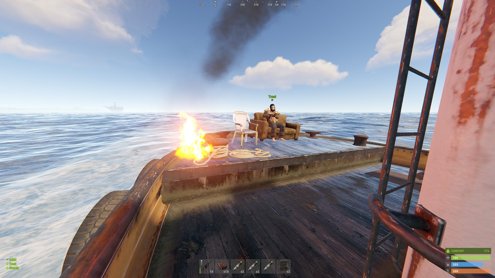
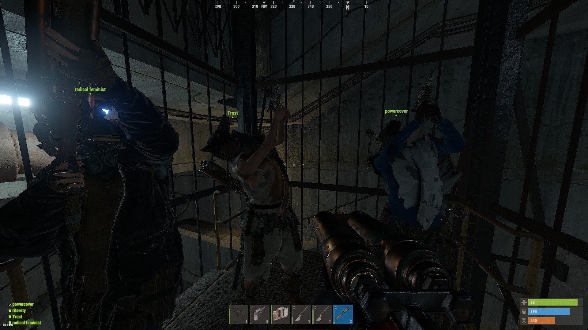
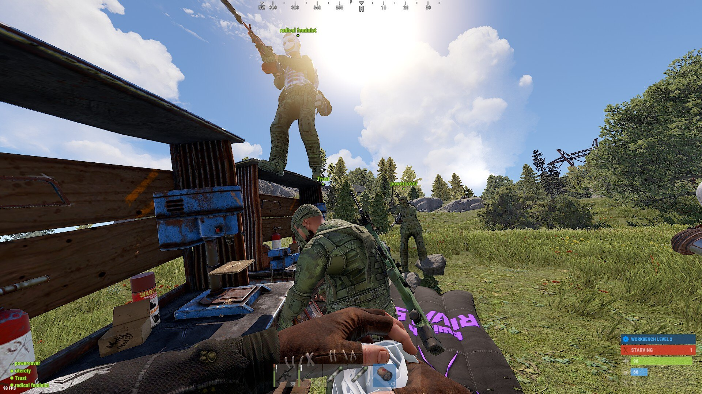
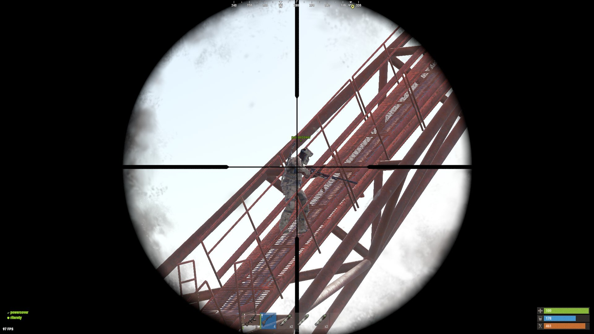
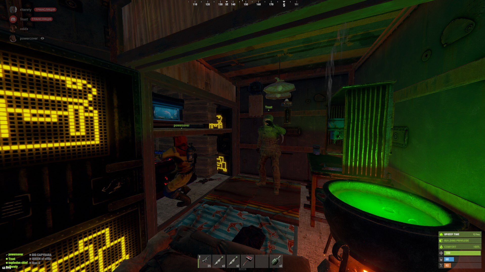
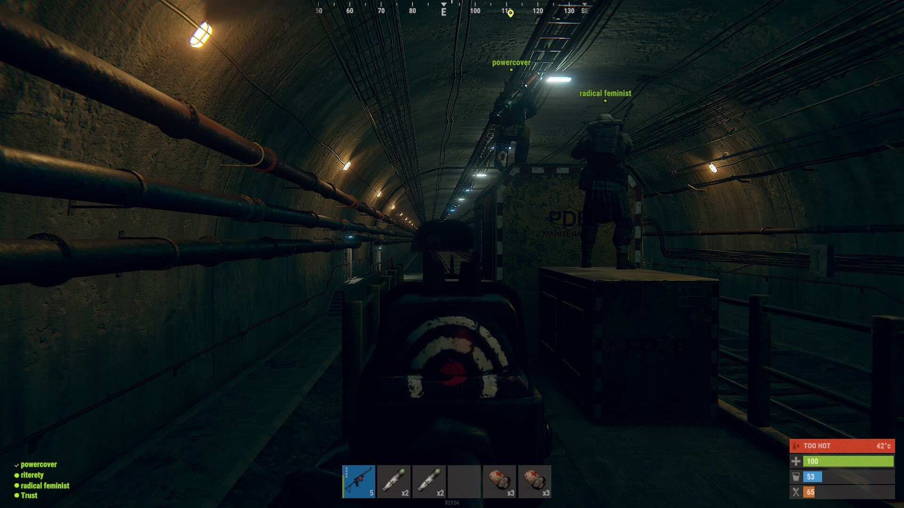

In the vast and unforgiving world of Rust, players seek more than survival—they yearn to craft legends. Trust&Rust, a server that stands as a testament to both camaraderie and challenge, provides the canvas for these epic tales. Join us as we delve into the riveting journey of players who have etched their mark in the rusted landscapes of Trust & Rust.
Trust&Rust is more than just a server; it's a thriving community where players forge alliances that withstand the tests of time. Clans rise and fall, each contributing to the dynamic narrative of the server. Explore the stories of clans that have overcome adversities, formed unbreakable bonds, and left an indelible mark on the server's history.
The server's landscape is adorned with architectural marvels—bases that defy the conventions of defense and aesthetics. From towering fortresses that pierce the sky to hidden bunkers beneath the earth, players showcase their creativity and strategic prowess through their unique constructions. Discover the secrets behind these structures and the tales they guard.
Trust & Rust hosts monthly showdowns that push players to their limits. PvP tournaments, survival challenges, and scavenger hunts are just a glimpse of the adrenaline-fueled events that unfold. These competitions not only test individual skill but also strengthen the bonds within clans, creating memories that resonate through the server.
Embark on a journey through the Trust&Rust Chronicles, a collection of player-driven stories and experiences. From heart-stopping encounters with wildlife to moments of unexpected camaraderie, these tales capture the essence of life in the Rust wasteland. Contribute your own story to this evolving narrative, and become part of the living history of Trust&Rust.
As Trust & Rust continues to evolve, so too do the opportunities for players to shape its destiny. New biomes, challenges, and features are on the horizon, promising even more excitement and unpredictability. The future is an open canvas, waiting for players to leave their mark and continue crafting the legacy of Trust&Rust. In Trust&Rust, every player is a storyteller, and every action contributes to the server's rich narrative. Join us in the adventure, and let your legend unfold in the rusted landscapes where trust is earned, alliances are forged, and legends are crafted. Trust&Rust awaits your story—what will you write?
Consider joining our discord and letting us know!